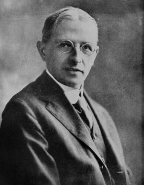
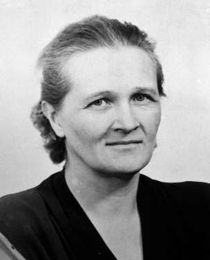

The Hertzsprung-Russell diagram (HR diagram) is one of the most important tools in the study of stellar evolution. Developed independently in the early 1900s by Ejnar Hertzsprung and Henry Norris Russell, it plots the temperature of stars against their luminosity (the theoretical HR diagram), or the colour of stars (or spectral type) against their absolute magnitude (the observational HR diagram, also known as a colour-magnitude diagram).
Published the earliest structural framework in 1905 and 1907. He discovered that stars of the same temperature could possess radically different intrinsic brightnesses, introducing the baseline partition between massive Giants and typical Main Sequence stars.

Independently calculated geometric paths to nearby clusters, plotting absolute magnitude against spectral class in 1913. His definitive graphical scatter mapping formalized this dataset worldwide, turning the chart into a standard reference tool.

Decoded the physical meaning of the plane in her monumental 1925 PhD thesis. She proved that the X-axis mapping letters represent changing thermal ionization Temperatures rather than chemical discrepancies, and discovered stars are mostly hydrogen.
Depending on its initial mass, every star goes through specific evolutionary stages dictated by its internal structure and energy production. By simply determining a star's temperature and luminosity, astronomers can pinpoint its exact position on the Hertzsprung-Russell (H-R) diagram to understand its internal structure and evolutionary stage.
1. The Main Sequence (Luminosity Class V): Stretching from the upper left (hot, luminous stars) to the bottom right (cool, faint stars), this diagonal spine dominates the H-R diagram. Stars spend roughly 90% of their lives here fusing hydrogen into helium. For reference, our Sun sits on the main sequence with a luminosity of 1 and a temperature of around 5,400 Kelvin.
2. Giants and Supergiants (Luminosity Classes I–III): Occupying the region above the main sequence, these stars have exhausted their core hydrogen and are now fusing heavier elements. According to the Stefan-Boltzmann law, their low surface temperatures and high luminosities dictate that they must have colossal physical radii.
3. White Dwarfs (Luminosity Class D): Found in the bottom left corner, these are the Earth-sized, cooling remnants of low- to intermediate-mass stars. Despite being very hot, their small size gives them exceptionally low luminosities.
Cosmic Applications: Astronomers use the H-R diagram to summarize stellar evolution and investigate collections of stars. By plotting an H-R diagram for a globular or open star cluster, astronomers can estimate the cluster's age based on where stars begin to turn off from the main sequence.